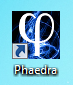
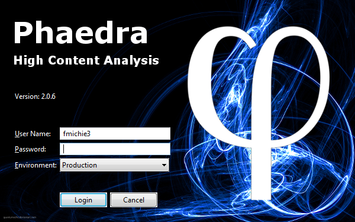
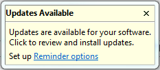
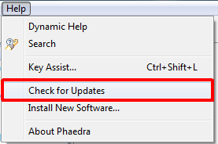
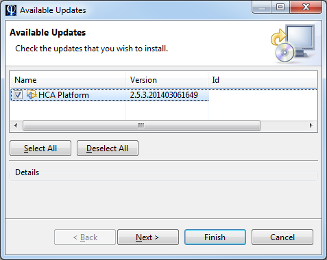
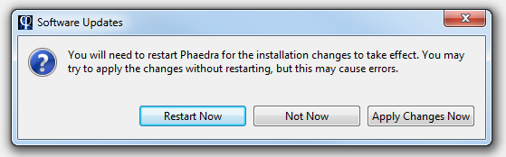

Phaedra is a client application, which means that it must be installed on your pc or laptop before you can use it. However, installation is straightforward, and you can install your own copy of Phaedra by following the steps outlined below.
After installing Phaedra, a new icon will appear on the desktop:

Double-clicking on this icon will launch the Phaedra application. Phaedra may need a few seconds to initialize, then you will be prompted with a login screen:

Use your NT account credentials to log in (the same username and password you use to log in to Windows), and select an environment to use.
Phaedra is a constantly-evolving application, with new features and bug fixes being released on a regular basis. To make sure your application stays current, an automatic update check is performed every time you start Phaedra. If an update is available, you will receive a notification pop-up in the lower right corner of the screen, as seen below.

Click on the 'Updates Available' title to perform the update.
Alternatively, you can check for updates manually, by going to the main menu and clicking Help > Check for Updates:

When an update is available, a dialog with the updates will appear. Press "Finish" to install the updates.

When the update has completed, You must restart Phaedra for the installation changes to take effect:
